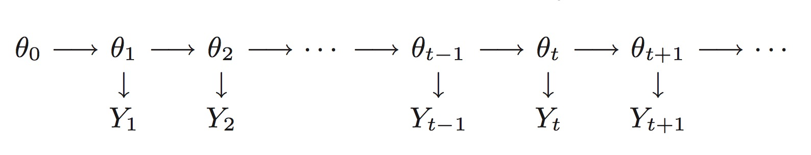

DLM模型
上一章我们介绍了ARIMA模型，这章我们来介绍DLM模型。在介绍DLM模型之前，首先谈一下状态空间模型(State space models)。状态空间模型将时间序列视为一个动态系统被随机扰动干扰的输出。它们将一个时间序列视为一些成分的组合，比如趋势，周期或者回归。
状态空间模型是在马尔科夫链(Markov chain)这样的相对简单独立结构的基础上，去为观察者定义更加复杂的模型。在一个状态空间模型中，我们假设有一个没有观察到的Markov chain(θt)，称为状态过程，时间序列Yt是对θt不精确的估计。在工程应用中θt通常描述的是产生输出Yt的物理观察系统的状态。另一方面，在计量经济学应用中θt通常是一个隐藏的结构，然而，通常有一个有用的解释。在任何一个例子中，可以把(θt)作为一个辅助的时间序列加速确定观察的时间序列(Yt)的概率分布。
更加正式的说，一个状态空间模型包含一个p维实数时间序列(θt:t=0,1,⋯)和一个R维实数时间序列(Yt:t=0,1,⋯)，满足下面的假设。
- (θt)是一个马尔科夫链。
- 给定(θt)的条件，Yt是独立的，并且只独立于θt。
基于上述两个假设，状态空间模型完全是由一个初始的分布π(θ0)和条件密度π(θt/θt−1)和π(yt/θt),t≥1。事实上，对于任意的t>0，
π(θ0:t,y1:t)=π(θ0)⋅j=1∏tπ(θj/θj−1)π(yj/θj)

状态空间模型其中最重要的一类就是高斯线性状态空间模型，也叫做动态线性模型。动态线性模型其中最基础的部分，可以总结如下所示:
- 观察过程(Yt:t=0,1,⋯)被认为是由隐状态(θt:t=0,1,⋯)加上高斯随机噪声决定的。如果我们知道连续时间点物体的位置，Yt将是独立的:保留下来的仅仅是不可预测的测量误差。更多的是，Yt仅仅依赖于t时刻的位置θt。
- 隐过程(θt)有相当简单的动态性:θt不依赖于过去全部的轨迹，仅仅依赖于之前的位置θt−1，通过一个线性的关系加上高斯随机噪声。
- 评估和预测可以顺序的得到，当新数据可以获得的时候。
线性和高斯性的假设是针对动态线性模型(DLM)的，但是(Yt)和(θt)的依赖结构是通用状态空间模型定义的一部分。
动态线性模型(DLM)是由一个在时间t=0时刻p维状态向量的正态先验分布
θ0∼Np(m0,c0)
和一对在任意t≥1时刻的状态和系统方程所定义。
趋势项
周期项